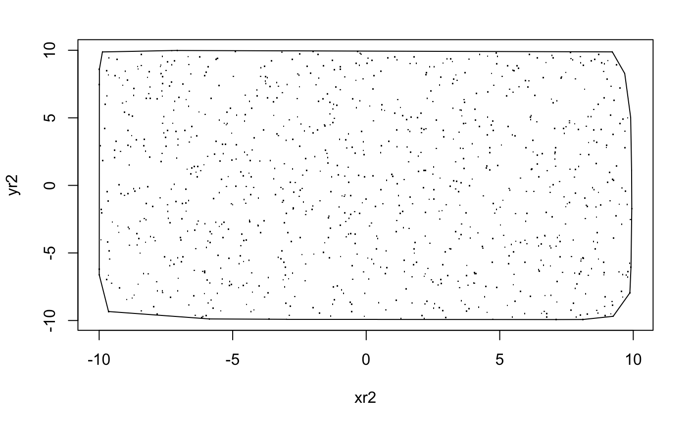
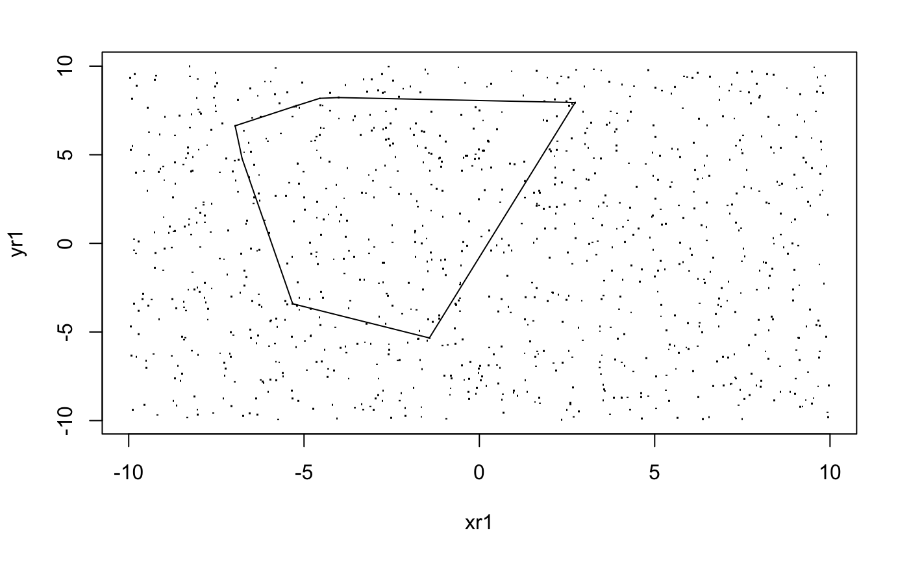
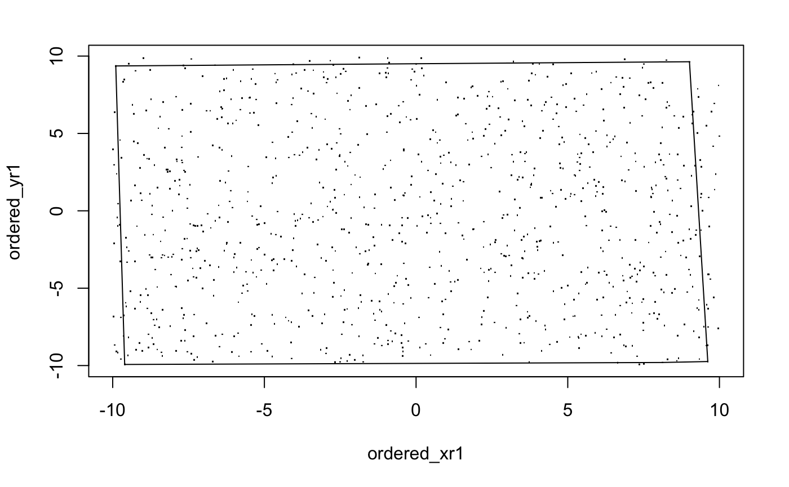
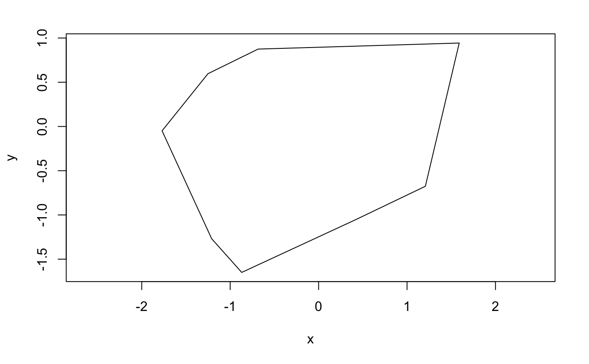
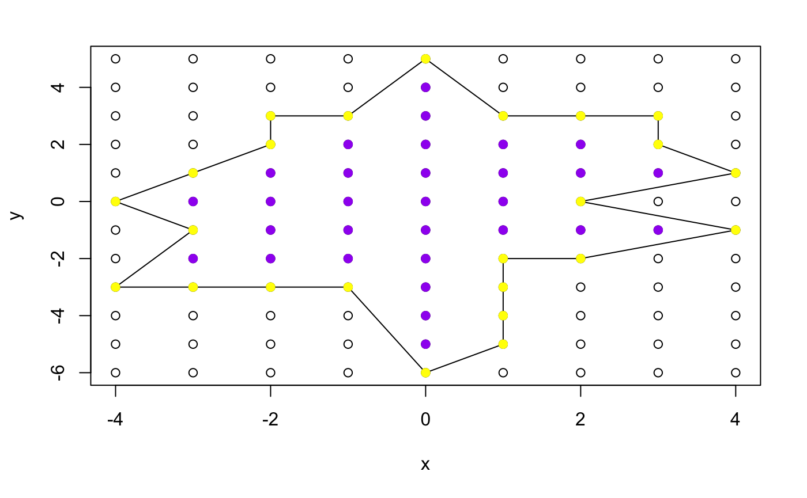
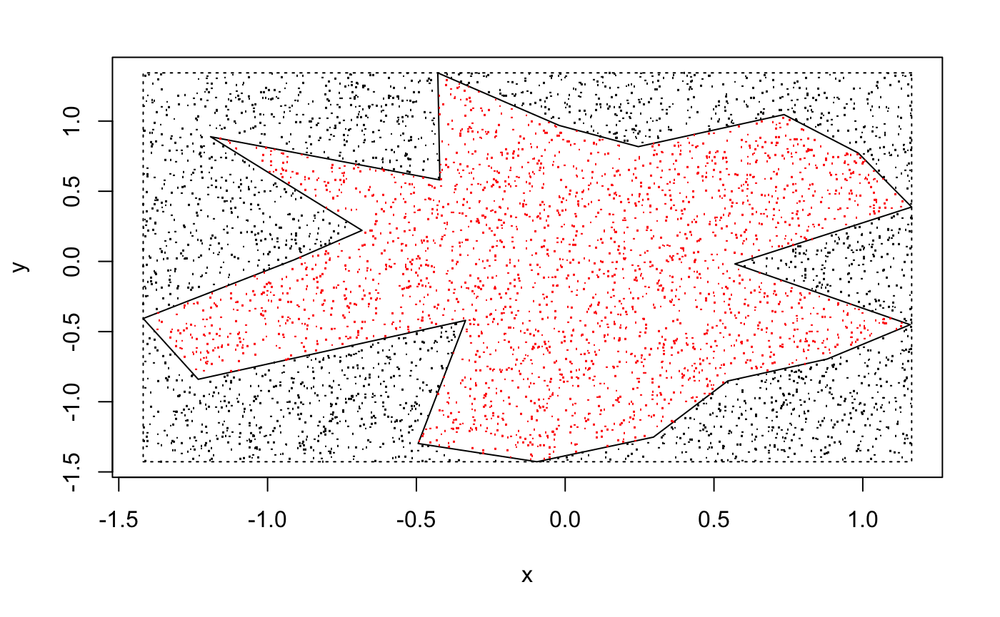

In the section Monte Carlo (Part 1), we mention convex hull of the concave polygon as the circumscripe convex polygon of it. Actually, given a set of points, its convex hull[18] is the convex polygon constructed from the selected points that contains all the points. It is possible to find the convex hull in easy way, in Monte Carlo (Part 1) the function outbound_convex can use to find the convex hull of a less complicate simple polygon, i.e. winding number of a point inside is less than 2 generally.
However, if given an arbitrary set of points, that function will not work.
There is a function in R called chull. Just like its name, given an arbitrary set of points, it will return the index of the points that form the convex hull.
For example:
import random
from geometry_module import area_mc_method, convex_hull
# Draw random points, take their convex hull, then estimate its area.
random.seed(2019)
k3 = 1000
pts_x = [random.uniform(-10, 10) for _ in range(k3)]
pts_y = [random.uniform(-10, 10) for _ in range(k3)]
hx, hy = convex_hull(pts_x, pts_y)
print('hull vertices:', len(hx))
print('area :', area_mc_method(hx, hy, 5000, 'ray')[0])

import random
from geometry_module import area_mc_method, convex_hull
# Random points and their convex hull, then its area
random.seed(2019)
xr2 = [random.uniform(-10, 10) for _ in range(1000)]
yr2 = [random.uniform(-10, 10) for _ in range(1000)]
hx, hy = convex_hull(xr2, yr2)
print(area_mc_method(hx, hy, 5000, 'ray')[0])
## [1] 390.754Also it's worth to notice that, if we generate the points over a rectangle uniformly, then the area of convex hull will approximately the same as the area of the rectangle. As we uniformly generate those points, there must be points around four corners, so the convex hull just looks like the rectangle itself. So we can say, if we generate $n$ points, as $n$ tends to infinity, the convex hull will tends to the region used to generate the points.
Apart from finding the convex hull, we can use the type of polygon function to test a large set of points. For example, if the first 5 points form a convex polygon, but the six points will make it self-intersecting or becomes concave, then we skip the point and move on to the next one. Code would look like this:
import random
from geometry_module import type_of_polygon
# How many random points does it take before the shape stops being convex?
random.seed(2019)
k2 = 1000
xr1 = [random.uniform(-10, 10) for _ in range(k2)]
yr1 = [random.uniform(-10, 10) for _ in range(k2)]
first_bad = None
for i in range(3, k2 + 1):
if type_of_polygon(xr1[:i], yr1[:i]) != 'Convex':
first_bad = i
break
print('first non-convex prefix length:', first_bad)

However, the limitation is very obvious. This method normally fails with a lot of "bad points" at the end.
Also, we can reorder the points: Instead of the given order, the furthest point from the centre of the set of points will be the first one, and the nearest one will be the last one. Then the method above will likely return a larger polygon.
import random
from geometry_module import type_of_polygon
# How many random points does it take before the shape stops being convex?
random.seed(2019)
k2 = 1000
xr1 = [random.uniform(-10, 10) for _ in range(k2)]
yr1 = [random.uniform(-10, 10) for _ in range(k2)]
first_bad = None
for i in range(3, k2 + 1):
if type_of_polygon(xr1[:i], yr1[:i]) != 'Convex':
first_bad = i
break
print('first non-convex prefix length:', first_bad)

But like the first one, this method normally fails with a lot of "bad points" at the end. Figure 8.3 is just an ideal example from the code above. It doesn't mean we can't do something, like set a while loop inside, detect the area. If the area is less than, like 90% of the rectangle, then repeat until the area is larger than that.
It is also possible to use the type of polygon function to generate a random simple polygon. Just put it into a while loop, and keep generating points inside a region. If the point generated form a convex/concave polygon in the given order, then stop the while, else repeat the process.
from geometry_module import generate_poly
# generate_poly()
# generate_poly(n, convex=True)
Like the function above, it generates a $n$-side polygon randomly. But when $n$ gets larger, it will be extremely slow, so $n \leq 8$ is recommended.
from geometry_module import generate_poly, classify_polygon
# A random polygon with 8 vertices
x, y = generate_poly(8, convex=True)
print('type:', classify_polygon(x, y))
print('x:', [round(v, 1) for v in x])
print('y:', [round(v, 1) for v in y])

## $x
## [1] 1.5902308 -0.6844604 -1.2514097 -1.7701839 -1.2096977 -0.8694716 0.4245622 1.2072511
##
## $y
## [1] 0.94380260 0.87501177 0.59655934 -0.04909636 -1.26849916 -1.64980162 -1.05089891 -0.67585441We can also generate a random polygon by setting a centre point first, and then span the angle and distance from the point randomly, also limit the sum of angle to $2\pi$. This method is much faster and it works very well, we can also use it to generate lattice polygon and calculate the area by Pick's theorem.
from geometry_module import generate_poly
# generate_poly_v2() in R -> generate_poly()
# generate_poly(n, convex=True)
Example 8.1 Generate a random simple lattice polygon and find the area by Pick's Theorem.
import random
from geometry_module import generate_poly, area_mc_method, classify_polygon
# A random 20-vertex polygon. Large n can produce a self-intersecting shape.
random.seed(2019)
x, y = generate_poly(20, convex=False)
print('type:', classify_polygon(x, y))
print('area:', area_mc_method(x, y, 5000, 'wind')[0])

## [1] 41Or else, we can use Monte Carlo method to find the area of the random polygon.
Example 8.2 Generate a random simple polygon and find the area by Monte Carlo method.
import random
from geometry_module import generate_poly, area_mc_method, classify_polygon
# A random 20-vertex polygon. Large n can produce a self-intersecting shape.
random.seed(2019)
x, y = generate_poly(20, convex=False)
print('type:', classify_polygon(x, y))
print('area:', area_mc_method(x, y, 5000, 'wind')[0])

## [1] 3.732384@theonaku